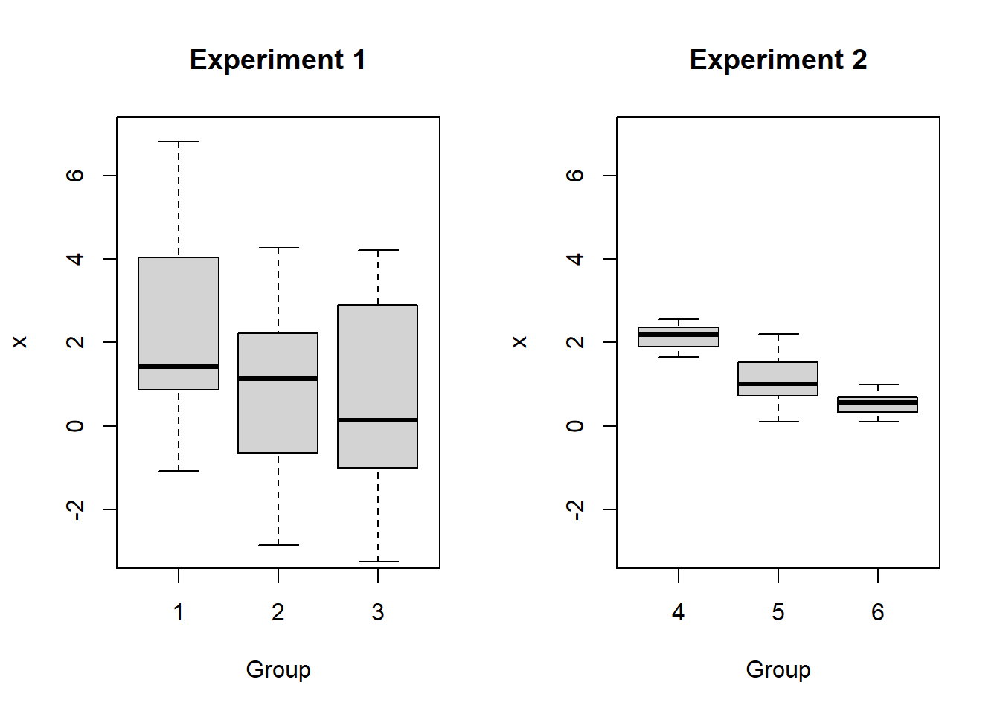

Module 12 ANOVA
In this module, we extend the concepts from Module 6 to answer questions like “is there a difference between these means?” We will also consider hypothesis tests for whether a sample represents the population or closely matches a particular distribution.
Module Learning Outcomes/Objectives
Perform and interpret inference for
- Interpret an ANOVA.
- Use the Bonferroni correction to conduct multiple comparisons.
12.1 What is the Analysis of Variance (ANOVA)
Now that we’ve examined tests for one and two means, it’s natural to wonder about three or more means. For example, we might want to compare three different medications: treatment 1 (\(t_1\)), treatment 2 (\(t_2\)), and treatment 3 (\(t_3\)). Based on what we’ve learned so far, we might think to do pairwise comparisons, examining \(t_1\) vs \(t_2\), then \(t_2\) vs \(t_3\), then \(t_1\) vs \(t_3\). Unfortunately, this tends to increase our Type I error!
Think of it this way: if I set my confidence level to 95%, I’m setting my Type I error rate to \(\alpha=0.05\). In general terms, this means that about 1 out of every 20 times I run my experiment, I would make a type I error. If I went ahead and ran, say, 20 tests comparing two means, my overall Type I error rate is going to increase - there’s a pretty significant chance that at least one of those comparisons will results in a Type I error!
Instead, we will use a test that allows us to ask: “Are all these means the same?” This is called the analysis of variance, or ANOVA.
- \(H_0\): The mean outcome is the same across all groups.
- \(H_A\): At least one mean differs from the rest.
In statistical notation, these hypotheses look like:
- \(H_0: \mu_1 = \mu_2 = \dots = \mu_k\)
- \(H_A: \mu_i \ne \mu_j\) for at least one pair \((i, j)\)
where \(k\) is the number of means being compared and the notation \(\mu_i\) represents the mean for the \(i\)th group (\(i\) can take on any whole number value between 1 and \(k\)).
For ANOVA, we have three key conditions:
- Observations are independent within and across groups.
Independence within groups is the way we’ve been thinking about independence already. We want to convince ourselves that for any particular group, the observations do not impact each other. For independence across groups, we want to convince ourselves that the groups do not impact each other. Note: if we have a simple random sample, this assumption is always satisfied.
- Data within each group are approximately normal.
If you make a histogram of the data for each group, each histogram will look approximately bell-shaped.
- Variability is approximately equal across groups.
Take the standard deviation for each group and check if they are approximately equal. A boxplot is an appropriate way to do this visually.
You may have seen the name “analysis of variance” and wondered what the variance has to do with comparing many means. Consider the following boxplots:

Is there a difference in the means for Experiment 1? What about Experiment 2?
In fact, the means are \(\mu_1 = \mu_4 = 2\), \(\mu_2 = \mu_5 = 1\), and \(\mu_3 = \mu_6 = 0.5\). But the variances for the Experiment 1 groups are much larger than for the Experiment 2 groups! The larger variances in Experiment 1 obscure any differences between the group means. It is for this reason that we analyze variance as part of our test for differences in means.
Aside: Why can’t we look at the data first and just test the two means that have the largest difference?
When we look at the data and then choose a test, this inflates our Type I error rate! It’s bad practice and not something we want to engage in as scientists.
In order to perform an ANOVA, we need to consider whether the sample means differ more than we would expect them to based on natural variation (remember that we expect random samples to produce slightly different sample statistics each time!). This type of variation is called mean square between groups or \(MSG\). It has associated degrees of freedom \(df_G = k-1\) where \(k\) is the number of groups. Note that \[MSG = \frac{SSG}{df_G}\] where \(SSE\) is the sum of squares group. If the null hypothesis is true, variation in the sample means is due to chance. In this case, we would expect the MSG to be relatively small.
When I say “relatively small”, I mean we need to compare this quantity to something. We need some quantity that will give us an idea of how much variability to expect if the null hypothesis is true. This is the mean square error or \(MSE\), which has degrees of freedom \(df_E = n-k\). Again, we have the relationship that \[MSE = \frac{SSE}{df_E}\] where \(SSE\) is the sum of squares error. These calculations are very similar to the calculation for variance (and standard deviation)! (Note: we will not calculate these quantities by hand, but if you are interested in the mathematical details they are available in the OpenIntro Statistics textbook in the footnote on page 289.)
We compare these two quantities by examining their ratio: \[F = \frac{MSG}{MSE}\] This is the test statistic for the ANOVA. (See Module 10 for an introduction to the F distribution.)
Generally, when we run an ANOVA, we create an ANOVA table (or we have software create one for us!). This table looks something like this
| df | Sum of Squares | Mean Squares | F Value | P-Value | |
|---|---|---|---|---|---|
| group | \(df_G\) | \(SSG\) | \(MSG\) | \(F\) | p-value |
| error | \(df_E\) | \(SSE\) | \(MSE\) |
Example: chick weights
Rhas data on the weights of chicks fed six different feeds (diets). Assume these data are based on a random sample of chicks. There are \(n=71\) total observations and \(k=6\) different feeds. Let’s assume we want to test with a 0.05 level of significance.The ANOVA hypotheses are
- \(H_0\): the mean weight is the same for all six feeds.
- \(H_A\): at least one feed has a mean weight that differs.
The summaries for these data are
## casein horsebean linseed meatmeal soybean sunflower
## n 12.00 10.00 12.00 11.00 14.00 12.00
## Mean 323.58 160.20 218.75 276.91 246.43 328.92
## Std Dev 64.43 38.63 52.24 64.90 54.13 48.84
The group sizes are relatively small, so it’s difficult to determine how far from normality these data are based on the histograms. We may also run into some issues with constant variance. However, for the sake of the example, let’s push ahead with the ANOVA! Since we usually use software to calculate ANOVAs, I’ve used
Rto create the following ANOVA table:
## Analysis of Variance Table
##
## Response: chickwts$weight
## Df Sum Sq Mean Sq F value Pr(>F)
## chickwts$feed 5 231129 46226 15.365 5.936e-10 ***
## Residuals 65 195556 3009
## ---
## Signif. codes: 0 '***' 0.001 '**' 0.01 '*' 0.05 '.' 0.1 ' ' 1From the table, we can confirm that \(df_G = 6-1 = 5\) and \(df_E = 71 - 6 = 65\). The F test statistic is \[MSG/MSE = 46226 / 3009 = 15.365\] Finally, the p-value is \(5.936\times10^{-10}\). Clearly \(5.936\times10^{-10} < \alpha = 0.05\), so we will reject the null hypothesis and conclude that at least one of the feed groups has a mean weight that differs.
12.2 Multiple Comparisons and Type I Error Rate
Let’s return for a moment to our ANOVA hypotheses:
- \(H_0\): The mean outcome is the same across all groups.
- \(H_A\): At least one mean differs from the rest.
If we reject \(H_0\) and conclude that “at least one mean differs from the rest”, how do we determine which mean(s) differ? If we reject \(H_0\), we will perform a series of two-sample t-tests. But wait! What about the Type I error? Isn’t this exactly what we decided we couldn’t do when we introduced ANOVA?
In order to avoid this increased Type I error rate, we run these multiple comparisons with a modified significance level. There are several ways to do this, but the most common way is with the Bonferroni correction. Here, if we want to test at the \(100(1-\alpha)\) level of significance, we run each of our pairwise comparisons with \[\alpha^* = \alpha/K\] where \(K\) is the number of comparisons being considered. For \(k\) groups, there are \[K = \frac{k(k-1)}{2}\] possible pairwise comparisons.
For these comparisons, we use a special pooled estimate of the standard deviation, \(s_{\text{pooled}}\) in place of \(s_1\) and \(s_2\): \[\text{standard error} = \sqrt{\frac{s_{\text{pooled}}^2}{n_1} + \frac{s_{\text{pooled}}^2}{n_2}}\] Other than changing \(\alpha\) to \(\alpha^*\) and the standard error to this new formula, the test is exactly the same as that discussed in the previous section. Note that \[s_{\text{pooled}} = \sqrt{MSE}\] and the degrees of freedom is \(df_E\).
Example: chick weights
Let’s extend our discussion on the chick weights to multiple comparisons. Since we were able to conclude that at least one feed has a weight that differs, we want to find out where the difference(s) lie!
We will test all possible pairwise comparisons. This will require \(K = \frac{6(6-1)}{2} = 15\) tests. The pooled standard deviation is \(s_{pooled} = \sqrt{3009} \approx 54.85\). Let’s walk through the test of casein \((\bar{x}_1 = 323.58, n=12)\) vs horsebean \((\bar{x}_2 = 160.20, n=10)\):
- \(H_0: \mu_1 = \mu_2\)
- \(H_A: \mu_1 \ne \mu_2\)
The estimated difference and standard error are \[\bar{x}_1 - \bar{x}_2 = 323.58 - 160.20 = 163.38 \quad\quad SE = \sqrt{\frac{54.85^2}{11}+\frac{54.85^2}{9}} = 25.65\] which results in a test statistic of \(t=6.37\) and a p-value of \(1.11\times10^{-8}\). We then compare this to \(\alpha^* = 0.05/15 = 0.0033\). Since the p-value of \(1.11\times10^{-8} < \alpha^* = 0.0033\), we reject the null hypothesis and conclude there is a significant difference in mean chick weight between the casein and horsebean feeds.
In order to complete the pairwise comparisons, we would then run the remaining 14 tests. I will leave this as an optional exercise for the particularly motivated student.
Note: occasionally, we may reject \(H_0\) in the ANOVA but may fail to find any statistically significant differences when performing multiple comparisons with the Bonferroni correction. This is ok! It just means we were unable to identify which specific groups differ.